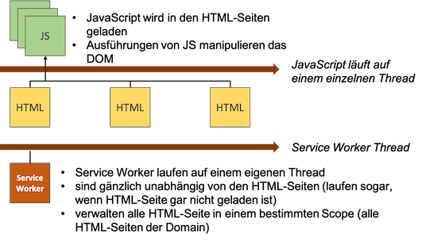
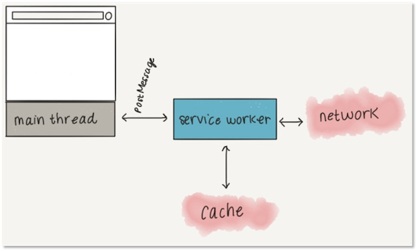
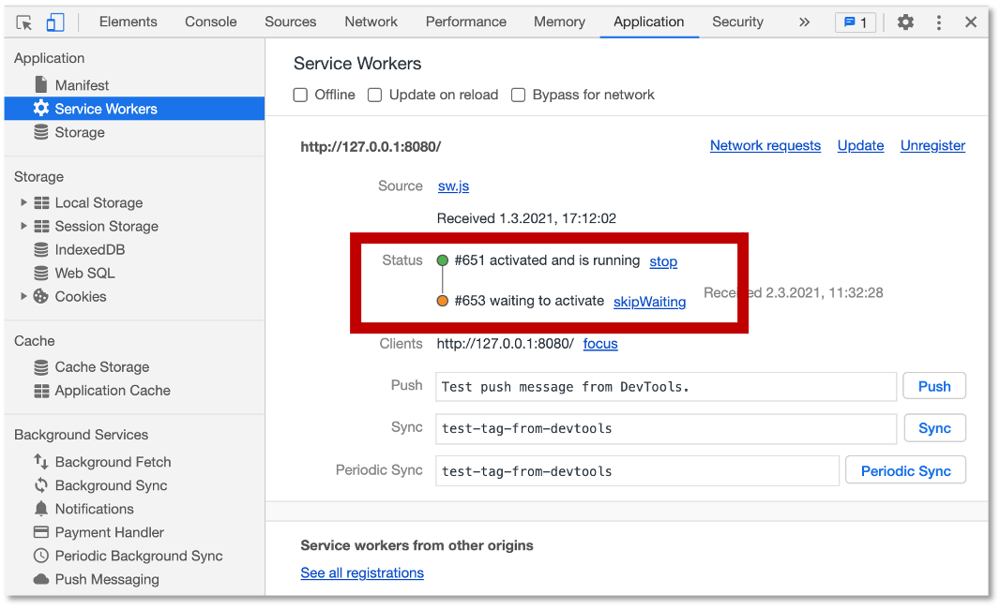
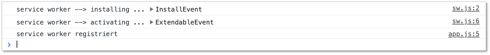

Service Workers¶
Wir betrachten einen wichtigen Grundbaustein, der solche Funktionalitäten, wie Push-Notifikationen, Hintergrund-Synchronisationen und die Möglichkeit, auch offline die Anwendung auszuführen, erst ermöglicht: sogenannte Service Workers.
Ein service worker ist zunächst einmal ein Skript (in JavaScript), welches im Browser im Hintergrund läuft, unabhängig von der Webseite. Ein service worker stellt Funktionalitäten, wie Push-Notifikationen oder Hintergrund-Synchronisationen zur Verfügung, ähnlich einer API. Entstanden sind service worker aus der Verwendung des Application Caches. Die service worker API wächst kontinuierlich und bietet zunehmend weitere Funktionalitäten.
Service worker haben einige nützliche Eigenschaften:
- Ein service worker kann zwar nicht direkt das DOM einer Seite manipulieren, kann aber auf Requests der Seite mit Responses reagieren und die Seite selbst kann darufhin ihr DOM ändern.
- Ein service worker ist ein "programmierbarer" Proxy, der steuert, wie Requests von der Webseite behandelt werden.
- Service workers verwenden die IndexDB API, um client-seitig strukturierte Daten persistent zu speichern.
- Service workers verwenden Promises. Wir werden uns deshalb Promises detailliert anschauen.
Die folgenden Abbildungen verdeutlichen die Arbeitsweise eines service workers. Zunächst überlegen wir uns nochmal, wie "normales" JavaScript in Webanwendungen ausgeführt wird. Die JS-Skripte werden mit den HTML-Seiten geladen. Sie stellen Funktionen bereit, die entweder durch Nutzerinteraktionen (z.B. click) oder durch Lifecycle-Events (z.B. onload) ausgelöst und aufgerufen werden. Diese Funktionen laufen alle in einem einzigen Thread:
 .
.
Service worker laufen auf einem eigenen Thread. Service worker werden an HTML-Seiten registriert, laufen aber gänzlich unabhängig von ihnen. Sie laufen sogar dann, wenn die HTML-Seiten geschlossen sind. Service worker laufen im Hintergrund, es handelt sich um Hintergrundprozesse. Service worker sind zwar JavaScript, manipulieren aber nicht den DOM. Sie sind nicht an HTML-Seiten gebunden, sondern an eine Domain. Service worker reagieren ebenfalls auf Ereignisse, aber andere, als wir sie von Webanwendungen kennnen, z.B. auf Push-Notifikationen.
.
Service worker laufen einfach im Hintergrund und warten auf Ereignisse. Welche Ereignisse können das sein?
Ereignisse, auf die Service Worker reagieren können¶
Wir betrachten hier einige der Ereignisse, auf die service worker reagieren können, auf die sie also "hören".
Fetch¶
Wann immer der Browser etwas vom Webserver lädt, führt er ein fetch-Ereignis aus. Das kann eine HTML-Seite, aber auch ein Bild (img), eine CSS-Datei oder eine JavScript-Datei sein. Ein service worker kann auf ein solches Ereignis reagieren. Tatsächlich agiert der service worker als ein Proxy, der zwischen dem Browser und dem Webserver steht und die fetch-Anfragen (requests) des Browsers empfängt und eventuell an den Webserver weiterleitet. Eventuell leitet er die Anfrage auch nicht weiter, sondern beantwortet sie mit einer Resource aus dem eigen Cache.
Für die fetch-Ereignisse wird die Fetch-API verwendet, auf die wir später noch ausführlich zu sprechen kommen. Wichtig ist an dieser Stelle zu erwähnen, dass ein (asynchrones) XMLHttpRequest kein fetch-Ereignis darstellt. Eine Single-Page-Application, die Ressourcen vom Browser nachlädt, ruft dabei keine (weiteren) fetch-Ereignisse auf.
Push-Notifikationen¶
Push-Notifikationen werden von einem (anderen) Server gesendet und können durch service worker verwaltet werden. Jeder Browser verfügt über eigene Push-Web-Server. Es können von jedem beliebigen Server Push-Nachrichten an diese Push-Web-Server gesendet werden. Der service worker kann auf solche Ereignisse reagieren. Wichtig ist hier zu wiederholen, dass service worker auch dann (im Hintergrund) arbeiten, wenn die Webanwendung selbst geschlossen ist. Sie können trotzdem erkennen, wenn Push-Nachrichten eingehen und darauf geeignet reagieren. Auch hier wirken service worker wieder wie ein Proxy, nämlich für die Push-Web-Server. Der service worker kann z.B. eine Nachricht auf dem Startbildschirm des Smartphones erzeugen. Mit dieser Nachricht kann die Nutzerin dann etwas machen und löst dabei das folgende Ereiegnis aus:
Notification interaction¶
Klickt eine Nutzerin auf die (Push-)Nachricht, die vom service worker erzeugt wurde, wird ein entsprechendes Ereignis ausgelöst, auf das wiederum der service worker reagieren kann, z.B. eine Webseite aufrufen und öffnen oder eine Anwendung. Auch hier ist es wieder wichtig, dass das ein service worker erledigt und nicht ein JavaScript, welches zu einer Webanwendung gehört, da es ja sein kann, dass diese Webanwendung geschlossen ist.
Hintergrund-Synchronisation¶
Es kann passieren, dass in einer Webanwendung Ereignisse ausgeführt werden, jedoch keine Verbindung zum Internet besteht. Typischerweise werden die Ausführungen solcher Ereignisse, die offline ausgeführt werden, ebenfalls durch service worker erledigt. Sobald der Browser wieder mit dem Internet verbunden ist, löst er ein Ereignis aus. Auf dieses Ereignis kann der service worker reagieren und die Ereignisse, die er offline gespeichert und beantwortet hat, nun im Hintergrund online ausführen, so dass eine Hintergrund-Synchronisation erfolgt.
Service-worker-Lifecycle-Ereignisse¶
Ein service worker durchläuft selbst einen eigenen "Lebenszyklus". Wir kennen Liefecycle-Events bereits aus Angular, z.B. ngOnInit() oder auch von Webseiten (load). Solche Lifecycle-Events existieren auch für service worker. Wir werden sie uns später im Detail anschauen. Zuerst betrachten wir aber zur Einführung ein einfaches Beispiel für die Verwendung eines service workers (wie wir gleich im Anschluss dikutieren werden, handelt es sich eigentlich um einen web worker).
Einfaches Beispiel service worker¶
Wir betrachten ein erstes einfaches Beispiel für die Verwendung eines service workers. Wir erstellen folgende index.html.
1 2 3 4 5 6 7 8 9 10 11 12 13 14 15 16 | |
In Zeile 10 wird mithilfe des Worker-Kunstruktors ein Worker-Objekt erzeugt. Dem Konstruktor wird die Implementierung des workers übergeben, genauer gesagt, die Implementierung des Event-Handlers für onmessage des Worker-Objektes. Die Implementierung des onmessage-Event-Handlers sieht typischerweise so aus, dass der service worker mit einer postMessage antwortet und diese an die Seite übergibt. In unserem Beispiel ist die Implementierung wie folgt:
1 2 3 4 5 6 7 8 9 | |
Zeile 8 enthält die postMessage. Darin wird eine Zahl n an die Seite geschickt, sobald sie berechnet wurde. Es handelt sich bei der Berechnung um eine Primzahlberechnung. Das heißt, der service worker arbeitet im Hintergrund und "sucht" neue Primzahlen. Sobald der service worker eine neue Primzahl gefunden hat, schickt er diese mithilfe der postMessage()-Funktion an die Webseite. Dadurch wird das onmessage-Ereignis (genauer gesagt, handelt es sich um das message-Event) behandelt. Wann immer onmessage auftritt, aktualisiert die Seite, genauer gesagt, der textContent des <output>-Elementes mit der id= "result" (siehe Zeilen 11-13 in index.html).
Dieses Beispiel ist extra einfach gehalten. genauer gesagt, handelt es sich bei dem Beispiel "nur" um einen web worker. Das W3C unterscheidet zwischen service workers und web workers. Der Unterschied zwischen web worker und * service worker* wird z.B. hier beschrieben.
Web worker vs. service worker¶
Wir verwenden für die Unterscheidung zwischen web worker und service worker hauptsächlich dieses Dokument. Darin finden wir auch folgendes Bild zur Beschreibung eines web workers:

Ein web worker hat kein spezifisches Einsatzszenario, außer dass er unabhängig von Hauptthread der Anwendung läuft und Nachrichten mittels postMessage() an die Anwendung schicken kann.
Demgegenüber ist ein service worker ein spezieller web worker, der als Proxy zwischen Anwendung und dem Netzwerk bzw. dem Cache agiert.

Service workers verfügen über mehr Funktionalitäten als web workers. Dazu gehören einerseits die Ereignisse, auf die service workers reagieren können:
installundactivate(sogenannte Lifecycle events),fetchund weitere Ereignisse, die durch Erweiterungen spezifiziert werden, z.B.push,notificationclick,notificationclose,sync,canmakepayment,paymentrequestusw. (sogenannte Functional events) sowiemessageundmessageerrorvom Web worker
und andererseits die Status, in denen sich ein service worker befinden kann:
parsed,installing,installed,activating,activatedundredundant(initial:parsed)
Die prinzipielle Idee der Registrierung eines service workers sieht so aus:

Die beiden Lifecycle-Events install und activate sind bereits eingezeichnet. Dabei ist zu betonen, dass ein service worker erst dann aktiviert werden kann, wenn kein anderer service worker mehr (in der gleichen Domäne/im gleichen Scope) läuft. Ein anderer service worker, der eventuell noch läuft, muss erst geschlossen werden, bevor der neue service worker das activate-Ereignis auslösen kann. Damit ein solcher "alter" service worker geschlossen werden kann, müssen zumindest alle Tabs im Browser, in denen die Webanwendung läuft, geschlossen werden. Selbst dann läuft der service worker aber immernoch weiter. Er muss explizit geschlossen werden. Das zeigen wir später.
Registrierung eines service workers¶
Während wir für das einfache Beispiel mit dem web worker noch den Worker()-Konstruktor verwendet haben, erfolgt die Registrierung eines service workers mittels navigator.serviceWorker.register('./sw.js'), wobei in sw.js der service worker implementiert ist. Wir schauen uns die prinzipielle Registrierung an:
1 2 3 4 5 6 7 8 9 10 11 12 13 14 15 16 17 18 19 20 21 22 23 24 25 26 27 28 29 30 31 32 33 34 35 36 37 38 39 40 41 42 43 44 | |
Wir haben hier die registrierung des service workers innerhalb des <script>-Elementes. Besser (und das werden wir später auch immer machen) ist die Erstellung einer eigenen .js-Datei dafür.
Wenn wir die Developer Tools öffnen, sehen wir auf der Console folgende Ausgabe:

Für diejenigen, für die das Registrierungs-Beispiel oben zu lang ist, hier die Version von W3C:
1 2 3 4 5 6 7 8 9 10 | |
Registrierung eines service workers in HTW-Insta¶
Nun, da wir wissen, wie die Registrierung eines service workers prinzipiell funktioniert, fügen wir unserem HTW-Insta-Beispiel einen solchen hinzu. Den aktuellen Stand der Anwendung finden Sie unter IKT-PWA-02. Das ist die Version, in der bereits das Web-App-Manifest enthalten ist.
Zunächst beachten wir noch einen besonderen Eintrag in der package.json:
1 2 3 4 5 6 7 8 9 10 11 12 13 14 15 | |
In Zeile 7 wird definiert, dass wir bei Aufruf des npm start-Befehls den Webserver http-server starten. Das Argument -c-1 besagt, dass wir für diesen Server nicht den Browser-Cache verwenden wollen. Jede datei, die wir somit vom Webserver anfordern, wird somit auch tatsächlich neu geladen. Stattdessen wollen wir nämlich nur den Cache des service workers verwenden.
Für unseren service worker erstellen wir uns im public-Ordner eine Datei sw.js. Da der service worker im public-Ordner angelegt wird, ist sein Scope unsere komplette Webanwendung. Wollten wir z.B. einen service worker, der nur für unsere Hilfe-Seiten zuständig ist, so hätten wir die Datei im help-Ordner erzeugt.
Um unseren service worker zu registrieren, müssen wir ihn in alle unsere HTML-Seiten einbinden. Wir haben die /public/index.html-Datei und die /public/help/index.html. Dort könnten wir innerhalb des eines <script>-Elementes die Registrierung durchführen. Da wir aber bereits in beiden Dateien die Datei public/src/js/app.js einbinden, erledigen wir die Registrierung einfach dort. Dann ist sie nur an einer Stelle und wir müssen die HTML-Dateien nicht anpassen. In die /public/src/js/app.js schreiben wir nun Folgendes:
1 2 3 4 5 6 7 | |
Starten unserer Anwendung und Aufruf im Browser ergibt die Ausgabe service worker registriert in der Konsole der DevTools.

Im Zusammenhang mit service workern gibt es folgendes zu beachten:
service worker funktionieren nur mit https oder auf localhost!
Wundern Sie sich also nicht, wenn Ihr service worker nicht funktioniert, sobald Sie Ihre Anwendung auf einem Webserver ausführen, der https nicht unterstützt. Anleitungen, wie Sie einen Webserver für https konfigurieren, finden Sie z.B. hier. Schauen Sie ansonsten auch hier und hier.
Service worker: Life-Cycle-Ereignisse behandeln¶
Nun implementieren wir den service worker. Wir haben ihn bereits registriert, aber die Datei sw.js ist noch leer. Die grundlegende Idee eines service workers ist es, Ereignisse zu behandeln. Wir werden unserem service worker also eine Reihe von addEventListener()-Funktionen hinzufügen. Diese Funktion kennen wir bereits aus "normalem" JavaScript-Code. Dort haben häufig so etwas wie addEventListener('click', function() { /* ... */ }) geschrieben. Das click-Ereignis hat aber keine Relevanz für service worker, da ein service worker keine Auswirkungen auf das DOM hat. Vielmehr reagiert ein service worker auf Ereignisse, die wir bereits oben beschrieben haben. Wir fügen unserem service worker Ereignisbehandlungen hinzu:
1 2 3 4 5 6 7 8 | |
Wir melden uns also an zwei Ereignisse an: an das install-Ereignis und das activate-Ereignis. Beide Ereignisse sind auch gut hier beschrieben. Beide Ereignisbehandlungen sind zunächst einfache Ausgaben auf die Konsole.
Zwei Sachen sind noch erwähnenswert: erstens wird self verwendet, um auf den service worker zu referenzieren. Für Erläuterungen über den Unterschied von this und self können Sie sich z.B. hier informieren. Grundsätzlich ist es so, dass mit self auf den gesamten Scope referenziert wird. In Webanwendungen ist der Scope häufig window, hier ist es aber die Domain, die den Scope des service workers beschreibt. Wir referenzieren also nicht auf den service worker selbst, sondern auf seinen Scope.
Die zweite erwähnenswerte Sache steht in Zeile 7. Wenn ein service worker registriert ist, dann "kontrolliert" er nicht automatisch alle Webseiten in seiner Domain. Erst durch das Neuladen dieser Seiten gelangen sie unter seine Kontrolle. Mithilfe der claim()-Funktion aus dem Interface Clients übernimmt der service worker die Kontrolle aber sofort, d.h. ohne ein Neuladen der Site. Einzige Ausnahme ist die Seite, die aktuell im Browser gezeigt wird. Für diese muss tatsächlich ein Reload durchgeführt werden. Weitere Informationen dazu finden Sie auch hier.
Wenn wir die Anwendung nun starten und dann im Browser aufrufen, erhalten wir folgende Ausgabe auf der Konsole:

Wir sehen, dass das install-Ereignis ausgelöst wurde, aber offensichtlich nicht das activate-Ereignis. Warum wurde das activate-Ereignis nicht ausgelöst? Darum kümmern wir uns im folgenden Abschnitt.
Noch eine kurze Bemerkung zur Reihenfolge der Ausgaben auf der Konsole. Auf der Konsole haben wir folgende Ausgaben:
service worker registriert
service worker --> installing ...
Das verwundert wahrscheinlich, weil das install-Event ausgelöst wird, bevor der service worker (existiert und) registriert werden kann. Also müssten die Ausgaben eigentlich in der anderen Reihenfolge erscheinen. Wir erinnern uns (siehe zweite Abbildung ganz oben in diesem Kapitel): der service worker läuft auf einem anderen Thread, als das "normale" JavaScript unserer Webanwendung. Also laufen app.js und sw.js auf verschiedenen Threads. In welchem dieser beiden Threads nun zuerst eine Ausgabe erfolgt, hängt von vielen verschiedenen Faktoren ab, lässt sich aber auch nicht beeinflussen. Dieses Mal war es so, dass der app.js-Thread schneller mit der Ausgabe war, als der sw.js-Thread. Das kann beim nächsten Mal schon anders sein. Wichtig ist, dass wir wissen, dass diese beiden Threads gänzlich nebenläufig und unabhängig voneinander laufen. Sollten sich dabei Ausgaben "überholen", dann ist das kein Bug, sondern ein Feature.
Service worker aktualisieren und aktivieren¶
Warum wurde das activate-Ereignis nicht ausgelöst? Dazu werfen wir einen Blick in unsere DevTools. Wir wählen den Reiter Application und dann im linken Menü unter Application den Menüpunkt Service Woorkers:

Wir sehen, dass der service worker im Status des Aktivierens ist, aber noch darauf wartet, aktiviert zu sein (waiting to activate). Hierzu ist es wichtig zu wissen:
- solange Sie im Browser (mindestens) einen Tab mit Ihrer Webanwendung offen haben, wird ein neuer service worker zwar installiert und registriert, aber nicht aktiviert,
- das liegt daran, dass die offene Seite eventuell noch mit einem alten service worker kommuniziert (evtl. hat der alte service worker noch etwas im Cache, das mit der Webanwendung synchronisiert werden müsste).
Wenn wir den Tab mit unserer Anwendung schließen und ihn erneut öffnen, dann sehen wir:

Es wurden also sowohl das install- als auch das activate-Ereignis ausgelöst. Auf der Konsole erscheint entsprechend:

Wenn Sie Ihren service worker aktualisiert haben, müssen Sie alle Tabs Ihrer Webanwendung schließen und erneut öffnen, um den neuen service worker zu aktivieren!
Beherzigen Sie die obige Ausgabe. Es kann Ihnen sehr viel Implementierungskummer bereiten, wenn Sie es nicht tun. Sie verändern Ihren Code im service worker, aber die Änderungen sind nicht wirksam? Dann haben Sie vielleicht nur ein Reload Ihrer Webanwendung durchgeführt - das reicht aber für den aktualisierten service worker nicht!
Aber zum Glück bieten die DevTools Hilfe, so dass Sie während der Entwicklung doch nicht immer den Tab schließen und neu öffnen müssen. Betrachten wir nochmals die folgende Abbildung:
Sie haben drei Möglichkeiten, den service zu aktivieren:
- Markieren Sie die Checkbox links neben
Update on reload. Dann wird durch das Reload Ihrer Webanwendung der aktualisierte service worker aktiviert. - Klicken Sie auf den Link
Updateoder - Klicken Sie auf den Link
skipWaiting.
Mit einem der drei Hilfen oben vermeiden Sie das Schließen und Neuöffnen des Tabs und der Webanwendung. Am einfachsten ist die erste Variante. Dann müssen Sie nur noch Reloaden und ansonsten weiter gar nichts machen.
Arrow-Notation verwenden¶
Wenn wir uns die Implementierung des service workers anschauen, dann sehen wir, dass wir etwas "old school" unterwegs sind, also so ca. 2017 ;-). Wir sollten anstelle der function()-Notation lieber die Arrow-Notation verwenden, um ein bisschen mehr up-to-date zu sein ;-). Zu Arrow-Notation siehe auch Hilfen→Arrow-Notation. Unsere service worker Implementierung sieht dann so aus:
1 2 3 4 5 6 7 8 | |
Die neuere Notation ändert an der Funktionalität natürlich nichts.
Service worker: andere Ereignisse behandeln¶
Bis jetzt haben wir nur Life-Cycle-Events behandelt. Jetzt schauen wir uns einmal das fetch-Ereignis an. Wir wissen bereits, dass das fetch-Ereignis immer dann ausgelöst wird, wenn etwas vom Webserver geladen wird, wenn also CSS-Dateien oder ein Bild oder JavaScript-Dateien geladen werden. Wir behandeln ein solches Ereignis wiederum mit einer einfachen Konsolen-Ausgabe:
1 2 3 4 5 6 7 8 9 10 11 12 | |
Falls wir in den DevTools unter Application→Application→Service Workers das Häkchen bei Update on Reload gesetzt hatten, müssen wir tatsächlich nur ein Reload der Webanwendung durchführen und wir sehen auf der Konsole, dass das fetch-Event selbst für unsere bis jetzt sehr kleine Anwendung recht häufig aufgerufen wird:

Wenn Sie in die jeweiligen FetchEvent-Objekte hineinklicken, welche Ressourcen jeweils per GET vom Webserver geladen werden.
Anwendung mit einem Android-Gerät verbinden¶
Ich kann es leider (bis jetzt noch) nicht ausprobieren, aber hier ist beschrieben, wie Sie die Anwendung auf einem Android-Gerät aufrufen können. Nun, da wir service worker verwenden, sollte es funktionieren. Das hier mag auch hilfreich sein.
Anwendung auf Ihrem iPhone aufrufen¶
Um die Anwendung auf Ihrem iPhone aufzurufen, müssen Sie sich zunächst nur anschauen, was im Terminal ausgegeben wird, nachdem Sie npm start aufgerufen haben:
Starting up http-server, serving ./public
Available on:
http://127.0.0.1:8080
htpp://192.168.1.24:8080
Hit CTRL-C to stop the server
Rufen Sie in Ihrem iPhone einen Browser auf (z.B. Safari oder Chrome) und geben dort di ezweite der beiden URLs ein (also htpp://192.168.1.24:8080). Die Anwendung wird ausgeführt. iOS unterstützt aber leider (noch) nicht, dass Sie ein Start-Icon dafür auf den Startbildschirm ablegen.